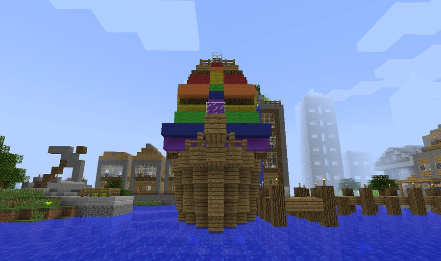
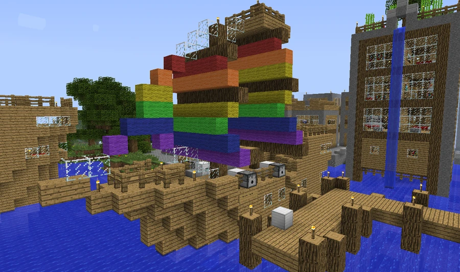
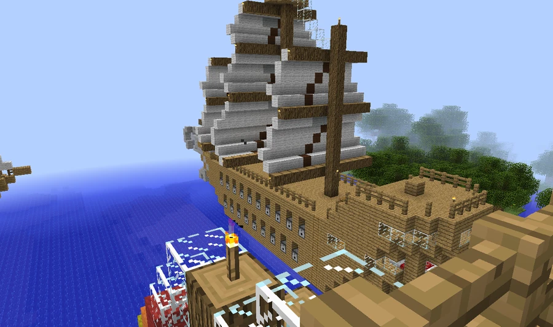

BVS Double Rainbow
A merchant ship remembered in community documentation for its sails and its role as a harbor tourist attraction.
Ship and harbor attraction
The BVS Double Rainbow is a medium-sized merchant ship in Broville's inner bay and harbor area. Built in 1963 by Hapsyshipyards under Teddy S. Hapsy's command, it became a tourist attraction for its gay and homoerotic sail imagery and three distinctive ice cream flavors. The ship's community history is told in a satirical tone.



Teddy S. Hapsy and construction
In 1962, Hapsy was a respected Broville Air Force pilot stationed at the base near the v11 area. The narrative attributes his dishonorable discharge to complaints about supposedly “unnatural” intimacy and an obsession with sailors; that language belongs to the prejudice depicted in the account. He was ordered to leave the base and the v11 area permanently.
Hapsy already harbored a secret love of the sea and began having erotic dreams about boats. In December 1962, he left his neglected wife and six children to build his own ship at the v10 docks. Construction began in February 1963, involved three workplace deaths and ended with the ship being commissioned as a merchant vessel.
Hapsy died in poverty three weeks later. The account places the Broviet Union's hiring of the ship to smuggle nuclear weapons into Cubro during the Cubros Missile Crisis three and a half weeks after commissioning. The payment is unknown, although rumors put it in the millions.
Service, tourism and celebrations
Services attributed to Double Rainbow include rescuing 63 disabled orphan children from a fire aboard the overloaded and sinking BVS Mexicoke. Later, the ship remained mostly dormant in the harbor, available to rent for thirty brobucks and a packet of Mentos.
The Broville Tourist Guide jokingly presents it as the least disreputable ship in the bay. Families and tourists visit to admire its sails, while its publicity plays on the fantasy of being an attractive sailor again. During the summer LGBT festival, the ship is loaded with fireworks and sent into the bay for displays described as dazzling and sensual. It is also a popular wedding venue because of its low rental price.
The name in the fleets
The merchant ship appears in the v10 list. The v11 list records a DDG-1 BVS Double Rainbow, reusing the name; the two BVS fleet entries alone do not establish that these are the same vessel.
Gallery






See also
Sources and references
- v11.4.4 maps, signs, books and items World records
- BVS Double Rainbow · Broville Wiki Community archive
Text adapted and expanded from BVS Double Rainbow (contributors and history, revision 5083). Adapted text is available under CC BY-SA 3.0.